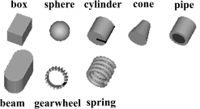
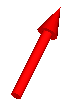

Package Visualizers.Advanced contains components to visualize 3-dimensional shapes with dynamical sizes. Basic knowledge of Modelica is needed in order to utilize the components of this package. These components have also to be used for models, where the forces and torques in the frame connector are set via equations (in this case, the models of the Visualizers package cannot be used, since they all have frame connectors).
| Arrow | Visualizing an arrow where all parts of the arrow can vary dynamically: |
| Shape | Animation shape of a part with dynamically varying sizes.
The following shape types are supported:  |
| Name | Description |
|---|---|
| Arrow | Visualizing an arrow with variable size; all data have to be set as modifiers (see info layer) |
| DoubleArrow | Visualizing a double arrow with variable size; all data have to be set as modifiers (see info layer) |
| Shape | Different visual shapes with variable size; all data have to be set as modifiers (see info layer) |
Model Shape defines a visual shape that is shown at the location of its reference coordinate system, called 'object frame' below. All describing variables such as size and color can vary dynamically. The default equations in the declarations should be modified by providing appropriate equations. Model Shape is usually used as a basic building block to implement simpler to use graphical components.
The following shapes are supported via
parameter shapeType (e.g., shapeType="box"):
The dark blue arrows in the figure above are directed along
variable lengthDirection. The light blue arrows are directed
along variable widthDirection. The coordinate systems
in the figure represent frame_a of the Shape component.
Additionally, external shapes are specified as DXF-files (only 3DFace is supported). External shapes must be named "1", "2" etc.. The corresponding definitions should be in files "1.dxf", "2.dxf" etc.Since the DXF-files contain color and dimensions for the individual faces, the corresponding information in the model is currently ignored. The DXF-files must be found in the current directory.
The following variables are declared as input. If the default equation is not appropriate, a corresponding modifier equations has to be provided in the model where a Shape instance is used, e.g., in the form
Visualizers.Advanced.Shape shape(length = sin(time));
| Declaration | Meaning |
|---|---|
| Frames.Orientation R = Frames.nullRotation() | Orientation object to rotate the world frame into the object frame. |
| Real[3] r = {0,0,0} | Position vector from origin of world frame to origin of object frame, resolved in world frame |
| Real[3] r_shape = {0,0,0} | Position vector from origin of object frame to shape origin, resolved in object frame |
| Real[3] lengthDirection = {1,0,0} | Vector in length direction, resolved in object frame |
| Real[3] widthDirection = {0,1,0} | Vector in width direction, resolved in object frame. When needed, this vector is modified such that it is orthogonal to vector lengthDirection |
| Real length = 0 | Length of visual object |
| Real width = 0 | Width of visual object |
| Real height = 0 | Height of visual object |
| Real extra = 0 | Additional size data for some of the shape types (see below) |
| Integer[3] color = {255,0,0} (red) | Color (see below) |
Via parameter extra additional sizing data is defined according to:
| shapeType | Meaning of variable extra |
|---|---|
| "cylinder" | if extra > 0, a black line is included in the cylinder to show the rotation of it. |
| "cone" | extra = diameter-left-side / diameter-right-side, i.e., extra = 1: cylinder extra = 0: "real" cone. |
| "pipe" | extra = outer-diameter / inner-diameter, i.e, extra = 1: cylinder that is completely hollow extra = 0: cylinder without a hole. |
| "gearwheel" | extra is the number of teeth of the gear. |
| "spring" | extra is the number of windings of the spring. Additionally, "height" is not the "height" but 2*coil-width. |
Parameter color is an Integer vector with 3 elements, {r, g, b}, and specifies the color of the shape. {r,g,b} are the "red", "green" and "blue" color parts. Note, r g, b are given in the range 0 .. 255. The predefined type MultiBody.Types.Color contains a menu definition of the colors used in the MultiBody library (will be replaced by a color editor).
| Name | Default | Description |
|---|---|---|
| shapeType | "box" | Type of shape (box, sphere, cylinder, pipecylinder, cone, pipe, beam, gearwheel, spring) |
model Shape
"Different visual shapes with variable size; all data have to be set as modifiers (see info layer)"
import SI = Modelica.SIunits;
parameter String shapeType="box"
"Type of shape (box, sphere, cylinder, pipecylinder, cone, pipe, beam, gearwheel, spring)";
input Frames.Orientation R=MultiBody.Frames.nullRotation()
"Orientation object to rotate the world frame into the object frame.";
input SI.Position r[3]={0,0,0}
"Position vector from origin of world frame to origin of object frame, resolved in world frame";
input SI.Position r_shape[3]={0,0,0}
"Position vector from origin of object frame to shape origin, resolved in object frame";
input Real lengthDirection[3]={1,0,0}
"Vector in length direction, resolved in object frame.";
input Real widthDirection[3]={0,1,0}
"Vector in width direction, resolved in object frame.";
input SI.Length length=0 "Length of visual object.";
input SI.Length width=0 "Width of visual object.";
input SI.Length height=0 "Height of visual object.";
input Real extra=0.0
"Additional size data for some of the shape types (details see docu).";
input Real color[3]={255,0,0} "Color (details see docu).";
protected
Real rxry[3, 2];
output Real Form;
public
output Real rxvisobj[3]
"x-axis unit vector of shape, resolved in world frame";
output Real ryvisobj[3]
"y-axis unit vector of shape, resolved in world frame";
output SI.Position rvisobj[3]
"position vector from world frame to shape frame, resolved in world frame";
output SI.Length size[3] "{length,width,height} of shape";
protected
output Real Material;
output Real Extra;
equation
/* Outputs to file. */
Form = (987000 + PackShape(shapeType))*1E20;
/*
[rxvisobj, ryvisobj] = Frames.to_exy(Frames.absoluteRotation(R,
Frames.from_nxy(lengthDirection, widthDirection))); */
rxry = Frames.to_exy(Frames.absoluteRotation(R, Frames.from_nxy(
lengthDirection, widthDirection)));
rxvisobj = rxry[:, 1];
ryvisobj = rxry[:, 2];
rvisobj = r + Frames.resolve1(R, r_shape);
size = {length,width,height};
Material = PackMaterial(color[1]/255.0, color[2]/255.0, color[3]/255.0, 0.0);
Extra = extra;
end Shape;
Model Arrow defines an arrow that is dynamically visualized at the defined location (see variables below).
The following variables are declared as input. Furthermore the definition import SI = Modelica.SIunits is used. If the default equation is not appropriate, a corresponding modifier equation has to be provided in the model where a Arrow instance is used, e.g., in the form
Visualizers.Advanced.Arrow arrow(diameter = sin(time));
| Declaration | Meaning |
|---|---|
| Frames.Orientation R = Frames.nullRotation() | Orientation object to rotate the world frame into the arrow frame. |
| SI.Position[3] r = {0,0,0} | Position vector from origin of world frame to origin of
arrow frame, resolved in world frame |
| SI.Position[3] r_head = {0,0,0} | Position vector from origin of arrow frame to the head of
the arrow, resolved in arrow frame |
| SI.Diameter diameter = world.defaultArrowDiameter | Diameter of arrow line |
| Integer[3] color = {255,0,0} (red) | Color (see Visualizers.Advanced.Shape) |
model Arrow
"Visualizing an arrow with variable size; all data have to be set as modifiers (see info layer)"
import SI = Modelica.SIunits;
input Frames.Orientation R=MultiBody.Frames.nullRotation()
"Orientation object to rotate the world frame into the arrow frame.";
input SI.Position r[3]={0,0,0}
"Position vector from origin of world frame to origin of arrow frame, resolved in world frame";
input SI.Position r_tail[3]={0,0,0}
"Position vector from origin of arrow frame to arrow tail, resolved in arrow frame";
input SI.Position r_head[3]={0,0,0}
"Position vector from arrow tail to the head of the arrow, resolved in arrow frame";
input SI.Diameter diameter=world.defaultArrowDiameter
"Diameter of arrow line";
input MultiBody.Types.Color color={0,0,255} "Color of arrow";
protected
outer MultiBody.World world;
SI.Length length=Frames.length(r_head) "Length of arrow";
Visualizers.Advanced.Shape arrowLine(
length=noEvent(max(0, length - diameter*Types.Defaults.
ArrowHeadLengthFraction)),
width=diameter,
height=diameter,
lengthDirection=r_head,
widthDirection={0,1,0},
shapeType="cylinder",
color=color,
r_shape=r_tail,
r=r,
R=R);
Visualizers.Advanced.Shape arrowHead(
length=noEvent(max(0, min(length, diameter*Types.Defaults.
ArrowHeadLengthFraction))),
width=noEvent(max(0, diameter*MultiBody.Types.Defaults.
ArrowHeadWidthFraction)),
height=noEvent(max(0, diameter*MultiBody.Types.Defaults.
ArrowHeadWidthFraction)),
lengthDirection=r_head,
widthDirection={0,1,0},
shapeType="cone",
color=color,
r=arrowLine.rvisobj + arrowLine.rxvisobj*arrowLine.length,
R=R);
end Arrow;
Model DoubleArrow defines a double arrow that is dynamically visualized at the defined location (see variables below).
The following variables are declared as input. Furthermore the definition import SI = Modelica.SIunits is used. If the default equation is not appropriate, a corresponding modifier equation has to be provided in the model where a DoubleArrow instance is used, e.g., in the form
Visualizers.Advanced.DoubleArrow doubleArrow(diameter = sin(time));
| Declaration | Meaning |
|---|---|
| Frames.Orientation R = Frames.nullRotation() | Orientation object to rotate the world frame into the arrow frame. |
| SI.Position[3] r = {0,0,0} | Position vector from origin of world frame to origin of
arrow frame, resolved in world frame |
| SI.Position[3] r_head = {0,0,0} | Position vector from origin of arrow frame to the head of
the arrow, resolved in arrow frame |
| SI.Diameter diameter = world.defaultArrowDiameter | Diameter of arrow line |
| Integer[3] color = {255,0,0} | Color (see Visualizers.Advanced.Shape) |
model DoubleArrow
"Visualizing a double arrow with variable size; all data have to be set as modifiers (see info layer)"
import SI = Modelica.SIunits;
input Frames.Orientation R=MultiBody.Frames.nullRotation()
"Orientation object to rotate the world frame into the arrow frame.";
input SI.Position r[3]={0,0,0}
"Position vector from origin of world frame to origin of arrow frame, resolved in world frame";
input SI.Position r_tail[3]={0,0,0}
"Position vector from origin of arrow frame to double arrow tail, resolved in arrow frame";
input SI.Position r_head[3]={0,0,0}
"Position vector from double arrow tail to the head of the double arrow, resolved in arrow frame";
input SI.Diameter diameter=0.01 "Diameter of arrow line";
input MultiBody.Types.Color color={0,0,255} "Color of double arrow";
protected
outer MultiBody.World world;
SI.Length length=Frames.length(r_head) "Length of arrow";
SI.Length headLength=noEvent(max(0, min(length, diameter*MultiBody.Types.
Defaults.ArrowHeadLengthFraction)));
SI.Length headWidth=noEvent(max(0, diameter*MultiBody.Types.Defaults.
ArrowHeadWidthFraction));
Visualizers.Advanced.Shape arrowLine(
length=noEvent(max(0, length - 1.5*diameter*MultiBody.Types.Defaults.
ArrowHeadLengthFraction)),
width=diameter,
height=diameter,
lengthDirection=r_head,
widthDirection={0,1,0},
shapeType="cylinder",
color=color,
r_shape=r_tail,
r=r,
R=R);
Visualizers.Advanced.Shape arrowHead1(
length=headLength,
width=headWidth,
height=headWidth,
lengthDirection=r_head,
widthDirection={0,1,0},
shapeType="cone",
color=color,
r=arrowLine.rvisobj + arrowLine.rxvisobj*arrowLine.length,
R=R);
Visualizers.Advanced.Shape arrowHead2(
length=headLength,
width=headWidth,
height=headWidth,
lengthDirection=r_head,
widthDirection={0,1,0},
shapeType="cone",
color=color,
r=arrowLine.rvisobj + arrowLine.rxvisobj*(arrowLine.length + 0.5*arrowHead1
.length),
R=R);
end DoubleArrow;